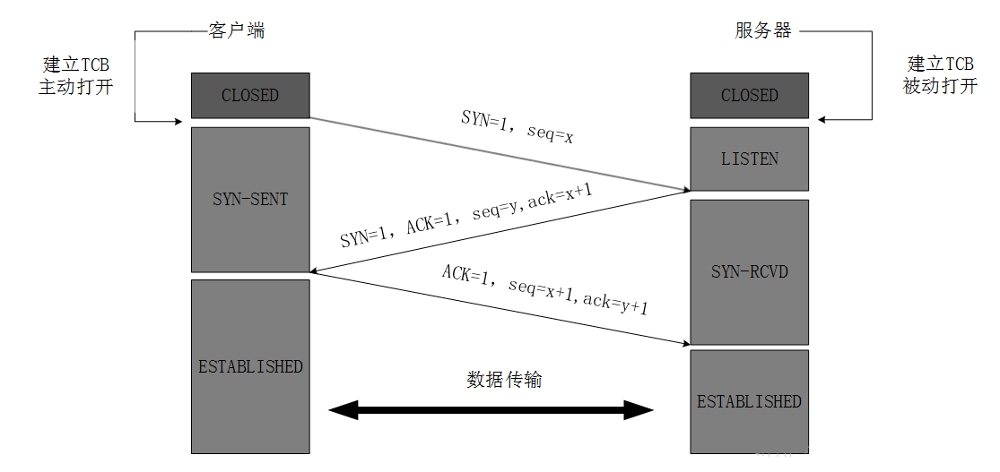
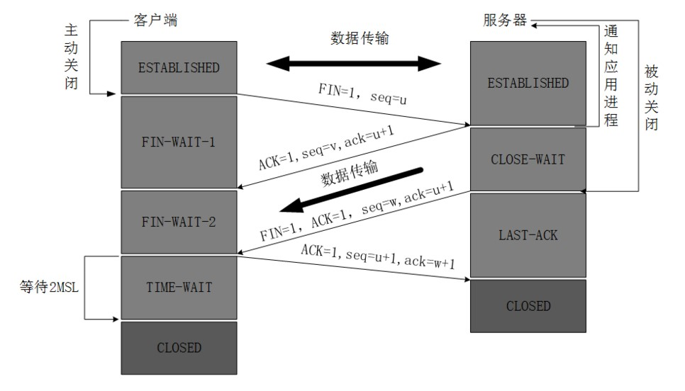

利用tcpdump命令抓取网络包，并验证三次握手和四次挥手。
Tcpdump简介
tcpdump是Linux下常用的抓包工具，具体使用方法网上有许多的教程，这里不打算细说，下面简要列一下常用的参数及其含义1
2
3
4
5
6
7
8
9
10
11
12
13
14
15
16
17
18
19
20
21
22
23
24
25
26-a：尝试将网络和广播地址转换成名称；
-c<数据包数目>：收到指定的数据包数目后，就停止进行倾倒操作；
-d：把编译过的数据包编码转换成可阅读的格式，并倾倒到标准输出；
-dd：把编译过的数据包编码转换成C语言的格式，并倾倒到标准输出；
-ddd：把编译过的数据包编码转换成十进制数字的格式，并倾倒到标准输出；
-e：在每列倾倒资料上显示连接层级的文件头；
-f：用数字显示网际网络地址；
-F<表达文件>：指定内含表达方式的文件；
-i<网络界面>：使用指定的网络截面送出数据包；
-l：使用标准输出列的缓冲区；
-n：不把主机的网络地址转换成名字；
-N：不列出域名；
-O：不将数据包编码最佳化；
-p：不让网络界面进入混杂模式；
-q ：快速输出，仅列出少数的传输协议信息；
-r<数据包文件>：从指定的文件读取数据包数据；
-s<数据包大小>：设置每个数据包的大小；
-S：用绝对而非相对数值列出TCP关联数；
-t：在每列倾倒资料上不显示时间戳记；
-tt： 在每列倾倒资料上显示未经格式化的时间戳记；
-T<数据包类型>：强制将表达方式所指定的数据包转译成设置的数据包类型；
-v：详细显示指令执行过程；
-vv：更详细显示指令执行过程；
-x：用十六进制字码列出数据包资料；
-w<数据包文件>：把数据包数据写入指定的文件。
-A：ASCII码的形式打印
tcpdump是支持条件语句的，具体的条件在引号中包裹，支持使用and ，or，&&，|| 等条件操作符，例如：
- 抓取目的IP为 172.28.249.53且端口号为 13357 的包
1
tcpdump -nvvv -i any -c 3 -XXX 'dst host 172.28.249.53 and port 13357'
Tcpdump 输出分析
我们先简单地抓一个包，具体的输出如下1
2
3
4
5
6
7
8tcpdump: listening on any, link-type LINUX_SLL (Linux cooked), capture size 65535 bytes
14:30:03.629486 IP (tos 0x0, ttl 64, id 0, offset 0, flags [DF], proto TCP (6), length 60)
172.28.249.48.9322 > 172.28.249.18.41867: Flags [S.], cksum 0x522d (correct), seq 3067974048, ack 183317909, win 14480, options [mss 1424,sackOK,TS val 259027436 ecr 2025203662,nop,wscale 10], length 0
E..<..@.@..?...0....$j......
.5...8.R-.........
.pq.x.'....
1 packets captured
- 172.28.249.42.9322 > 172.28.249.18.41867：代表的是从 IP为172.28.249.42,端口为9322 发送到 IP为172.28.249.18，端口为41867的包
- Flags[] ：括号中代表的是TCP报文中的标志位，具体含义如下
- [S]：SYN，表示这是一个请求
- [.]：ACK，表示这是一个确认
- [S]：PSH，表示数据推送
- [F]：FIN，表示关闭连接操作
- [R]：RST，表示连接关闭时，仍然有数据未被处理。可以理解为是强制切断连接
- [U]：URG，代表Urgent，表明包的优先级高，需要优先传送对方并处理。
- cksum：校验和
- seq：tcp包的seq号
- ack：ack号
- win：滑动窗口大小
- options：可选字段，具体指跟含义如下
- nop：是 no operation的缩写，主要用作padding，因为该区域必须是 4 字节的倍数
- TS val ：这个值是tcp包的时间戳，不过这个时间戳和设备的系统时间没啥关系，刚开始是随机值，后面随着系统时钟自增长。这个时间戳主要用处是seq序列号越界从0重新开始后，可以确认包的顺序。
- erc：用来计算RTT
- length：代表包的长度
实例分析
先说一下背景，客户端的IP是 172.28.249.18，服务端的地址是172.28.249.48:9322，客户端发起一个请求从服务端获取数据。我们从客户端处抓包，命令如下1
tcpdump -nvvv -i any -A -c 20 'src host 172.28.249.48 and port 9322 or dst host 172.28.249.48 and port 9322'
三次握手

- 首先服务器处于LISTEN状态，可以监听收到的请求
- 客户端发送建立连接的请求 ,客户端从CLOSED状态变为SYN-SENT状态
- 服务器收到请求后，返回确认信息给客户端，服务器从LISTEN状态变为SYN-RCVD状态
- 客户端收到确认信息后，从CLOSED状态变为ESTABLISHED**状态，并且发送确认信息
- 服务器收到确认信息后，从SYN-RCVD状态变为ESTABLISHED状态
结合具体的包来看TCP的三次握手过程，具体我们只需要看下面三个包1
2
3
4
5
6
7
8
9
10
11
12
13
1410:59:49.263615 IP (tos 0x0, ttl 64, id 60900, offset 0, flags [DF], proto TCP (6), length 60)
172.28.249.18.46514 > 172.28.249.48.9322: Flags [S], cksum 0x35d4 (correct), seq 867286293, win 14600, options [mss 1460,sackOK,TS val 1926189297 ecr 0,nop,wscale 10], length 0
E..<..@.@..[.......0..$j3.........9.5..........
r.P........
10:59:49.263895 IP (tos 0x0, ttl 64, id 0, offset 0, flags [DF], proto TCP (6), length 60)
172.28.249.48.9322 > 172.28.249.18.46514: Flags [S.], cksum 0x8191 (correct), seq 688842460, ack 867286294, win 14480, options [mss 1424,sackOK,TS val 160013145 ecr 1926189297,nop,wscale 10], length 0
E..<..@.@..?...0....$j..)...3.....8............
..Yr.P....
10:59:49.263914 IP (tos 0x0, ttl 64, id 60901, offset 0, flags [DF], proto TCP (6), length 52)
172.28.249.18.46514 > 172.28.249.48.9322: Flags [.], cksum 0xe8bd (correct), seq 1, ack 1, win 15, options [nop,nop,TS val 1926189297 ecr 160013145], length 0
E..4..@.@..b.......0..$j3...)..............
r.P. ..Y
可以很清楚的从中看到三次握手的过程
- 客户端发送了一个SYN包，同时seq为867286293（x = 867286293）
- 服务端回了一个SYN包和一个ACK包，同时seq为688842460（y = 688842460），ack为867286294（ack = x + 1）
- 客户端回一个SYN包，同时seq为1，ack为1
四次挥手

- 客户端发送关闭报文给服务器，客户端从ESTABLISHED状态变为FIN-WAIT-1状态
- 服务器收到客户端发过来的FIN报文后，从ESTABLISHED状态变为CLOSE-WAIT状态，并且针对上述报文发送ACK（确认）报文
- 客户端收到确认报文后从FIN-WAIT-1状态变为FIN-WAIT-2状态
- 服务器发送完数据后，发送FIN（含ACK）报文给客户端，服务器从CLOSE-WAIT状态变为LAST-ACK状态
- 客户端收到服务器的关闭报文后，发送ACK（确认）报文给服务器，客户端从FIN-WAIT-2状态变为TIME-WAIT状态
- 服务器收到确认报文后，关闭服务器，从LAST-ACK状态变为CLOSE状态
- 客户端在2ms内都没收到服务器的报文后，从TIME-WAIT状态变为CLOSE状态
结合具体的包来看TCP的四次挥手过程，具体我们只需要看下面三个包1
2
3
4
5
6
7
8
9
10
11
1210:59:49.310647 IP (tos 0x0, ttl 64, id 60907, offset 0, flags [DF], proto TCP (6), length 52)
172.28.249.18.46514 > 172.28.249.48.9322: Flags [F.], cksum 0xd7a8 (correct), seq 193, ack 4081, win 23, options [nop,nop,TS val 1926189344 ecr 160013190], length 0
E..4..@.@..\.......0..$j3...)..............
r.Q ...
10:59:49.310891 IP (tos 0x0, ttl 64, id 32137, offset 0, flags [DF], proto TCP (6), length 52)
172.28.249.48.9322 > 172.28.249.18.46514: Flags [F.], cksum 0xd7ac (correct), seq 4081, ack 194, win 16, options [nop,nop,TS val 160013192 ecr 1926189344], length 0
E..4}.@.@.r....0....$j..)...3..............
...r.Q
10:59:49.310903 IP (tos 0x0, ttl 64, id 60908, offset 0, flags [DF], proto TCP (6), length 52)
172.28.249.18.46514 > 172.28.249.48.9322: Flags [.], cksum 0xd7a5 (correct), seq 194, ack 4082, win 23, options [nop,nop,TS val 1926189344 ecr 160013192], length 0
E..4..@.@..[.......0..$j3...)..............
r.Q ...
可以很清楚的从中看到四次挥手的过程
- 客户端先发送了一个FIN包，同时seq为193（u = 193）
- 服务端回了一个ACK包，一个FIN包，同时seq为4081（v = 4081）， ack为194（ack = u + 1）【注意，这里服务端的数据已经发送完毕，所以没有close_wait的状态】
- 客户端回了一个ACK包，同时ack为4082（ack = v + 1）